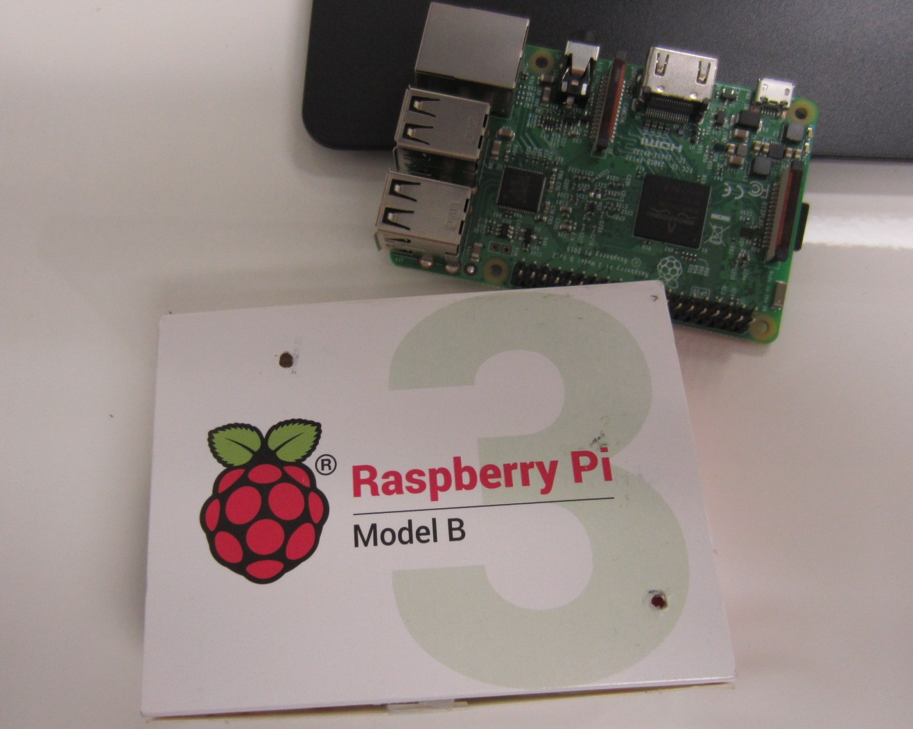
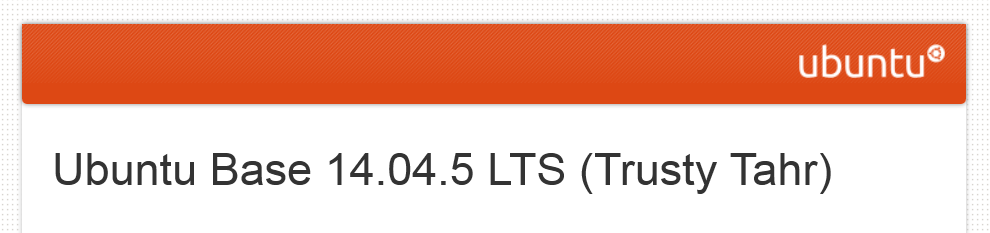
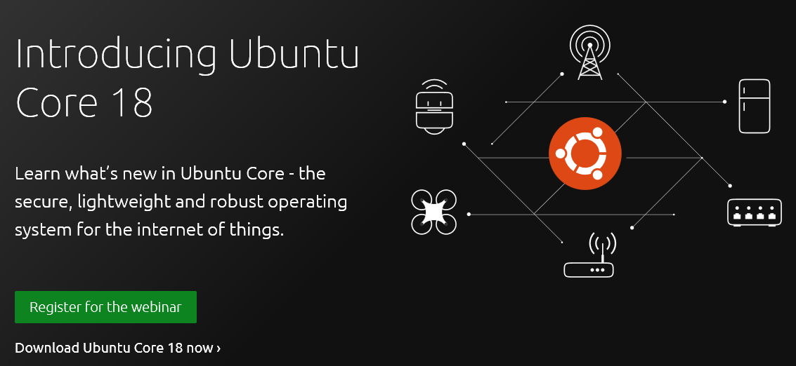
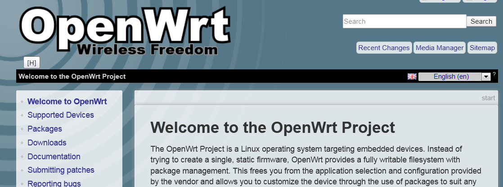

Quick Summary
A few notes about the Raspberry Pi Development Platforms
What’s in your kit?
- 2 Raspberry Pi’s
- 3 sdcards:
- 1 sdcard with Ubuntu Core installed
- 1 sdcard with OpenWrt installed
- 1 sdcard blank.
- standoffs to raise the Pi off the desk
- Power Supply
- Serial Cable, instructions on hooking it up
Raspberry Pi 3 B
There is a 3 B+ out there. Faster processor, does 5GHz wireless.
3 B Specs that we care about: - Quad-Core processor, 64 bit, plenty of compute power - wifi 2.4Ghz - 1 GB ram, nice! - Bluetooth. - Lan and USB
Flexible HW platform that can run just about anything.
With that said, my 2 choices for Platforms or Distros is Ubuntu and Openwrt. Ubuntu, because I’ve been using it forever and it’s solid. Openwrt because I’ve had success with it in the HooToo devices.
Ubuntu Core, the old stuff. They used to call it ‘Ubuntu Base’

Ubuntu Core is a GREATLY reduced server type distribution of Ubuntu. On the order of 400MB on a fresh install. There’s no graphics. There’s not even an initial log-in, I had to add that.
The new Ubuntu Core is VERY, VERY different from the Ubuntu Core that I have installed.
My “old” Ubuntu Core is based on 14.04.5 LTS (Trusty Tahr). Been using it since 2013, and I’ve installed it and used it on probably 10 different hardware platforms: all ARM based. It has worked fantastic on all these platforms.
When the distro initially comes up there’s barely anything to do, and one must install packages to have any sort of useful.
I have put together a shell script named “1stboot_config.sh”. It’s meant to be run after the unit 1st comes up. It installs a lot of stuff, and also then moves a bunch of files to their final landing spot.
Ubuntu Core, the New stuff

I spent about 3-4 hours on Friday messing around with the latest Ubuntu Core: 18.04. This is the distro that they are touting for IoT, based on their concept of “snap packages”
Installation was easy enough, no problem there.
The distro itself, is to me, pretty quirky. My main take-away is this:
New Ubuntu Core, based on snaps, is a walled garden.
There’s a learning curve here, not sure how steep, regarding these “snap” packages.
My take is that the new Ubuntu Core is purely a target, and you’ve got to develop these snap packages on another system. Once developed, you upload your snap to a Ubuntu site. Once it’s on their site, NOW you can download the snap to your target.
Or something like that.
This thing is super secure, I could not add a user, and there is no concept of a root password. It’s like you get one user, you have to register credentials for that user on the Ubuntu site, and that’s the only username that can log in. You have to upload ssh credentials to the Ubuntu site in order to login.
All pretty messy. But might work great in deploying 1000’s of these devices.
Issues with Ubuntu Core
I think the primary issue is that this distribution is not a router, instead it’s a server.
It should be able to route, there’s plenty of instructions I’ve found for doing so.
What I have not figured out yet is how to get both network interfaces up and active at the same time. Meaning you can ping both devices.
I can ping one device. Routing tables don’t seem to be set up properly. And even when I do set them up properly (by hand), I still can’t ping both devices.
After boot-up, the active lan device is fairly random. Sometimes the active device will be the ethernet port, and sometimes it will be the wifi. ssh for instance will only work on one device.
The other issue has to do with the direction Ubuntu is taking “Ubuntu Core”. I liked the old stuff. I’m going to need quite a bit of time to figure out their “walled garden space”.
Configure your Ubuntu Core
- /etc/wpa_supplicant/wpa_supplicant.conf
Your network SSID Your network password
OpenWRT

I installed from the binaries at:
Referenced from this :wq